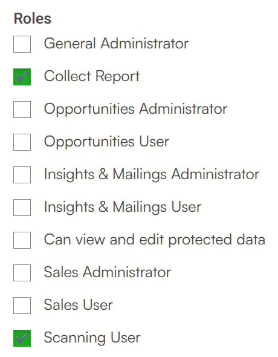
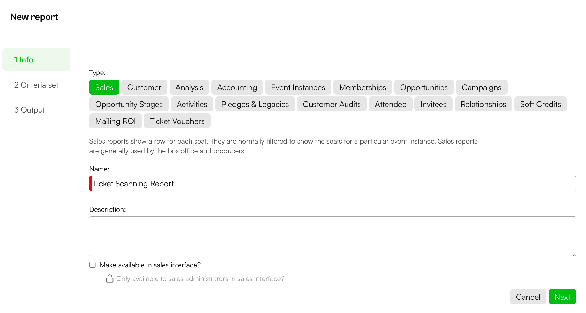
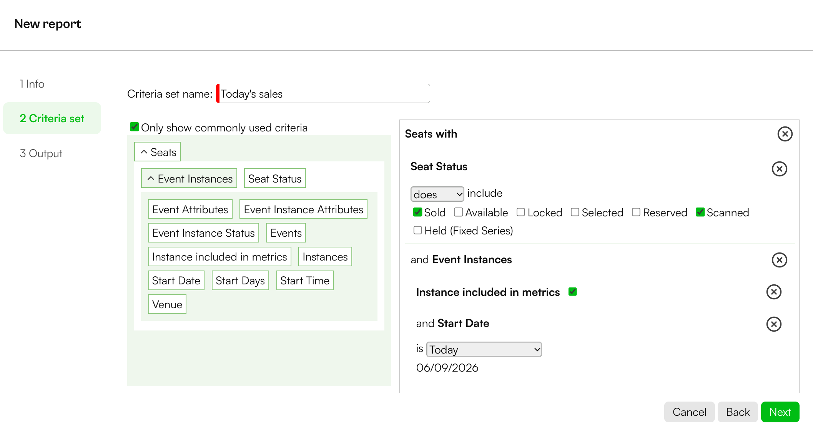
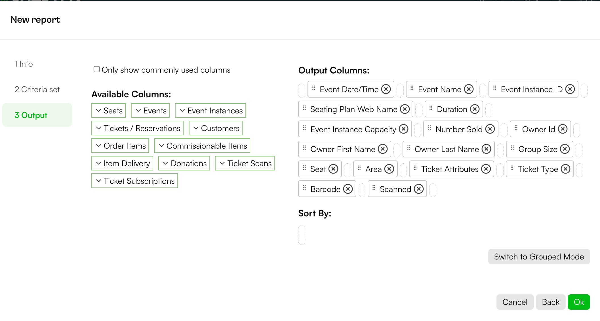
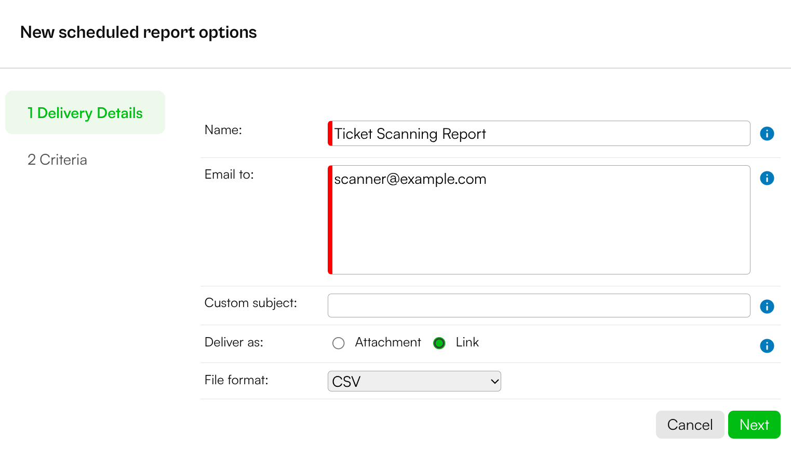
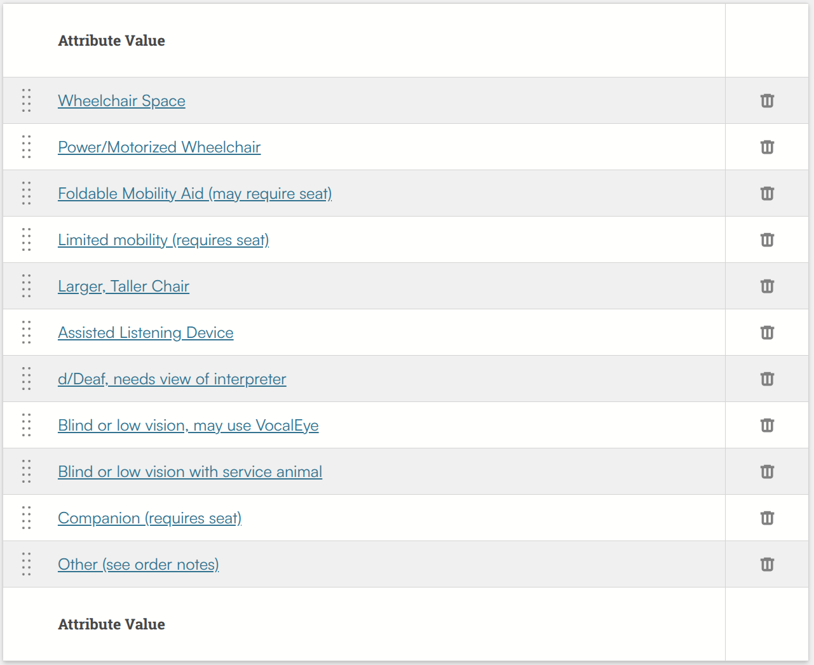
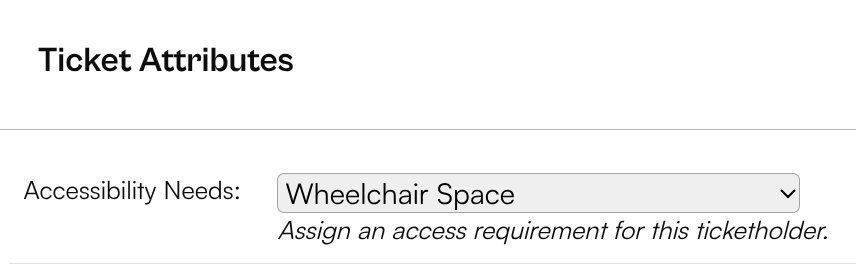

For basic scanning functionality, you only need to log in with a Spektrix® account that has Scanning User permissions. To unlock the full potential of the app, follow the steps below.
To use attendee lists, scan reports, and group scanning, your user account also needs Collect Report permissions. You can set this in the Spektrix® Settings interface, under Users > User Accounts.

The app's advanced features rely on a specific report. Go to the Insights & Mailings interface and create a new Sales report named 'Ticket Scanning Report'.

The criteria set should be named 'Today's sales'. It needs to find tickets with the Seat Status of 'Sold' or 'Scanned', for events where the Start Date (under 'Event Instances') is 'Today'.

The report's output columns must include the same as shown below:

Next, give your user accounts access to this report. In Insights & Mailings, go to 'Report Schedules' and click 'Add'.
Choose our 'Ticket Sales Report' with the 'Today's sales' criteria. Name it something memorable (e.g., 'Ticket Scanning Report'). Make sure the schedule is active, and check the 'Run on demand' box. Everything else can remain unchanged. Proceed to the next step to add your report.
In the Delivery Details, name it 'Ticket Scanning Report', and add the email addresses of all the user accounts you'll have logging into the app separated by commas. Set to deliver as a Link in CSV format. Click 'Next' and then 'Ok', and then 'Ok' again to add the report schedule.

Finally, the 'Access Notes' feature requires a specific Ticket Attribute. In the Settings interface, under 'Attribute Definitions', click on 'Ticket' and add a new attribute named 'Accessibility Needs'.
We recommend setting this up as a dropdown list for consistency. You can then define the specific notes your Front of House team will find most useful. A text field will also work, but a character limit is advised.

You'll need to instruct your Box Office team to add an attribute when an access ticket is booked. They can select the tickets in the Sales Interface, then click 'Ticket attributes' from the 'Reserve' dropdown menu.

Once these steps are complete, you're ready to use all the features of the Ticket Scanner app!